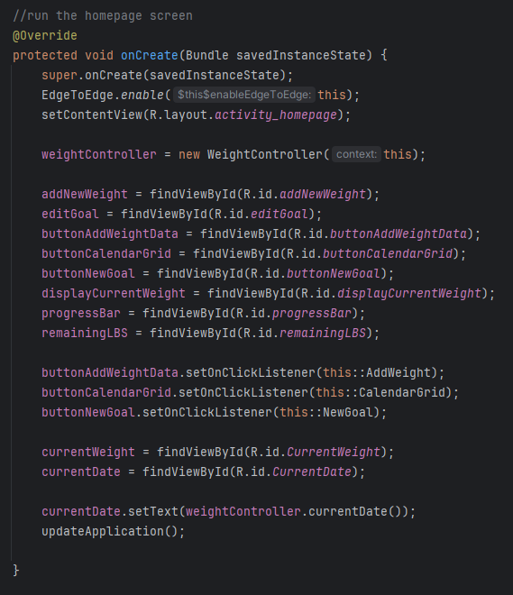
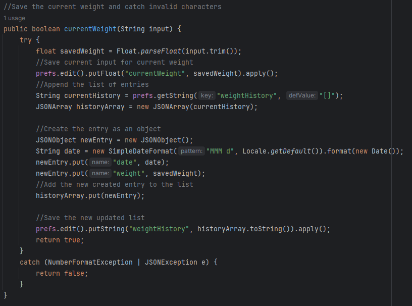

SNHU | CS 499 ePortfolio
Insert text here
Code review
The code review below is a step-by-step analysis of the weight-loss tracking application that I built in Android studio. Here, I demonstrate my UI/UX design ability, as well as identifying the areas that would later be enhanced. An effective code review is crucial to understanding the fundamentals, architecture and communication of a program and its relative components. Both code reviews effectively demonstrate the course outcome for designing, developing, and delivering professional-quality oral, written, and visual communications.
Download the ENHANCED source code
Download the ORIGINAL source code
This weight loss tracking application, originally developed for CS 360 – Mobile Architect and Programming, is designed to allow a user to login to their account or register if no previous account was created. Once authenticated, a homepage is presented that shows the current weight (if entered) as well as an option for adding a new entry, viewing current progress represented in the progress bar, and setting a new goal. Additionally, a calendar button is provided to access the calendar grid showing all previous weight entries and the date that they were entered. Finally, upon setting a new goal, the user is presented with an option to turn SMS notifications on or off. If turned on, the user will receive a notification when the goal has been met.


This artifact demonstrates my ability to code in Java, as well as create a functional user interface. The greater demonstration of skills is the ability to join these two components to form a seamless flow for a user to interact. Furthermore, category one is titled “Software Engineering and Design” which presented a great opportunity to enhance this application’s architecture. In its original state, the application had login and homepage classes that were handling all the user interface mechanics including buttons and display, as well as the math calculations and logic. Creating two new controller classes to take over the calculations demonstrates an ability to not only enhance an existing application but to think differently about how a program functions. I demonstrated the ability to create a cohesive project that handles various elements, methods and classes that all work together.
The biggest challenge was linking all the java files and correcting the communication once the enhancements were made. By creating these additional classes to handle the calculations and fixing the error in the current weight calculation, this overhauled the architecture allowing stronger communication among the components. I learned that sometimes there may be a method that works best for one area, but not for another. Therefore, it is important to understand how to strike a balance that works best for the overall program or application. This enhancement fully satisfies the course outcome to design and evaluate computing solutions that solve a given problem using algorithmic principles and computer science practices while managing trade-offs. Additionally, this demonstrates an ability to use well-founded and innovative techniques, skills, and tools in computing practices.


This code above highlights the restructuring of the architecture by using the home page to capture input data and send the processing of logic and calculations to the weight controller. This demonstrates a good practice of “separation of concerns” allowing each component to function most efficiently.
Code review
The code review below is a walkthrough of the source code for a course planner program written in C++. This program demonstrates strengths in code data structures and databases, as well as strategically enhances a simple program to one that is more complex. Code reviews are an important practice for computer science professionals because it is an effective way of identifying errors, finding solutions, and cultivating improvements.

Download the ENHANCED source code
Download the ORIGINAL source code
Insert text here


Insert text here